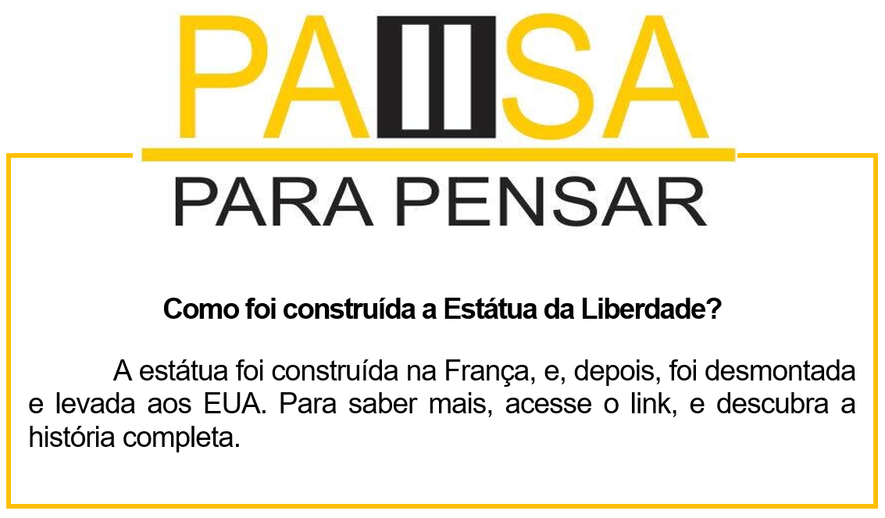

Capítulo 1: Constructions and Parts of House - Construções e Partes da Casa
Questão-problema:
Nesta unidade vamos expandir nossos conhecimentos sobre construções, estruturas e partes internas e externas de residências. Vamos iniciar com um breve informação sobre o uso do principal material de uma obra, o cement (cimento).

Cement can be mixed with water and other elements to make concrete (which is used as a solid object) or mortar (which is used as a “glue” to stick bricks together).
Vamos aos nossos estudos de texto. Nosso trecho traz informações sobre o uso do cimento. Apresente como deve ser usado e com quais produtos se utiliza. Vamos a tradução.
O cimento pode ser misturado com água e outro elementos para fazer concreto (no qual é usado para solidificar objetos) ou argamassa (no qual é usado como “cola” para aderir os tijolos juntos).

Individual workers can transport heavy things more easily by using a wheelbarrow.
Os trabalhadores individualmente podem transportar coisas pesadas mais facilmente usindo o wheelbarrow, carrinho de mão.

Scaffolding is a metal structure that is put up temporarily so that workers can climb up to reach the high points of the building.
É muito comum vermos essas estrutura nas ruas próximas a grandes construções, denominhada de Scaffolding, em português, andaime. Vamos ver a nossa informação:
O andaime é uma estrutura de metal que é colocada temporariamente para que os trabalhadores possam escalar e alcançar pontos altos das construções/prédios.
Em relação a segurança, temos um item bem utilizado para sinalizar algo, que é o cone.

If the construction is on or near a road, cones may be used to redirect traffic.
Nossa informação é:
Se a construção for dentro ou perto de uma rododia, os cones podem ser usados para redirecionar o trafego de veículos.
Contextualizando - Lista de materiais de construção
brick -> tijolo
cement -> cimento
concrete -> betão
glass -> vidro
gravel -> gravilha
marble -> mármore
metal -> metal
plastic -> plástico
sand -> areia
slate -> ardósia
stone -> pedra
wood -> madeira
Observe nosso dicionário ilustrado com partes externas de casas e construções

Biblioteca – dicionários
Para iniciantes é preciso ter um bom dicionário a mão ou no celular, já que utilizamos a tecnologia diariamente. Vamos a nossa BIBLIOTECA com dicas de dicionários. Algumas editoras possuem dicionários com vocabulário específico. Os mais utilizados são da linha Oxford. Veja na nossa dica cultural.


Reconstruindo conhecimento – Verbos modais can, may
No inicio da nossa unidade observamos nos textos informativos palavras em destaque em vermelho. Essas palavras são chamadas de verbos modais. As citadas no texto foram: CAN e o MAY. Vamos aprender o uso desses verbo modificadores.
Uso do can e may
Can – Habilidade mental ou física de fazer algo ou perguntar sobre a possibilidade de fazer algo. Por exemplo:
“Can you play the violin?“ (Você sabe tocar o violino?)
I can drive a car. Eu posso dirigir carro.
We can speak English. Nós podemos falar inglês.
May – Autorização ou permissão para fazer algo. Por exemplo:
“May I please use your stapler?“ (Eu posso usar o seu grampeador, por favor?)
I may use the computer. Eu posso (talvez) usar o computador.
Aplicando ao nosso vocabulário
• The worker can build other bathroom. -> O trabalhador pode construir outro quarto.
• My father may build other house. -> Meu pai pode construir outra casa,
Assista ao vídeo e saiba mais sobre os modais CAN e MAY
O que aprendi
• Nessa unidade aprendemos o vocabulário sobre construções civis e obras;
• Aprendemos a classificar os materiais obra;
• Observamos as diferenças entre os verbos modais can e may;
• Vimos que tem dicionário específico de construção.

Praticando
Usando nosso dicionário ilustrado com as partes da casa, faça uma lista em inglês dos itens que aparecem nessa house.

________________________________
________________________________
________________________________
________________________________
________________________________
________________________________
Observe a obra e cite quais materiais de construção aparecem em uso.

________________________________
________________________________
________________________________
________________________________
________________________________
________________________________
Usando os verbos modais elabora frases utilizando esses objetos de construção, veja o exemplo:
Cement – Cement can be used for construction a wall. -> O cimento pode ser usado para construir um muro/parede.